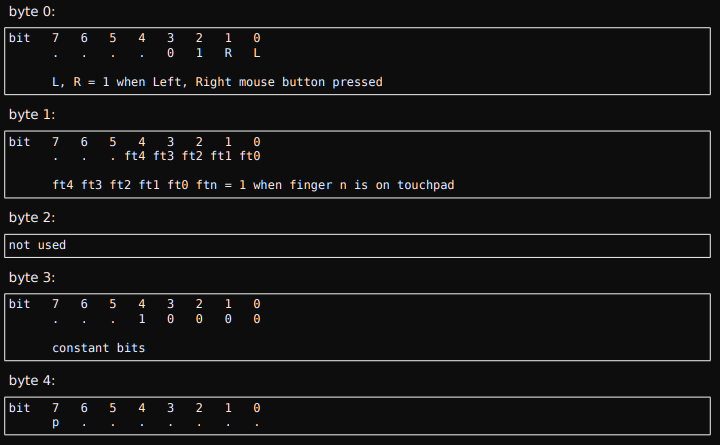
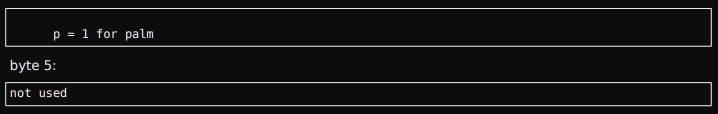

Protocolo ALPS para trackpads
Actualmente, el controlador del panel táctil ALPS admite siete versiones de protocolo en uso por los paneles táctiles ALPS, llamadas versiones 1, 2, 3, 4, 5, 6, 7 y 8. Aproximadamente desde mediados de 2010, se han lanzado e integrado varios nuevos
paneles táctiles ALPS en una variedad de portátiles y netbooks.
El diseño de las opciones fueron redefinir la tabla alps_model_data, con el riesgo de realizar pruebas de regresión en los dispositivos existentes, o aislar los nuevos dispositivos
fuera de la tabla alps_model_data. Se hizo la última elección de diseño. Donde las nuevas firmas del panel táctil se denominan: "Rushmore", "Pinnacle" y "Dolphin", que verá en la código alps.c. A los efectos de este documento, este grupo de
paneles táctiles ALPS se denominará genéricamente “Nuevos paneles táctiles ALPS”.
Detección
Todos los paneles táctiles ALPS deben responder a la secuencia de comandos del “informe E6”: E8-E6-E6-E6-E9. Un ALPS de panel táctil debe responder con 00-00-0A o 00-00-64 si no se presiona ningún botón. Los bits 0-2 del primer byte será 1s si
se presionan algunos botones.
Si el informe E6 es satisfactorio, el modelo de panel táctil se identifica mediante la secuencia "Informe E7": E8-E7-E7-E7-E9. La respuesta es la firma del modelo y se compara con modelos conocidos en el alps_model_data_array.
Para los paneles táctiles más antiguos que admiten las versiones de protocolo 3 y 4, la firma del modelo de informe E7 es siempre 73-02-64. Para diferenciar estas versiones, la respuesta de la secuencia "Entrar en modo de comando" debe
inspeccionarse como se describe a continuación.
Los nuevos paneles táctiles ALPS tienen una firma E7 de 73-03-50 o 73-03-0A pero parecen estar mejor diferenciados por la respuesta del modo de comando EC.
Driver Elantech touchpad
Un ejemplo de la utilización de los protocolos anteriormente descritos es la creación de un driver específico para el manejo de Touchpad de autoría de Steve Havelka.
En primer lugar lo que hace es diferenciar a los trackpads en distintas
versiones, de la 1 a la 8, donde los números menores son los primeros lanzados al mercado y los mayores, los últimos. Esto es porque las primeras versiones utilizaban paquetes de 4 bytes, pero a medida que los dispositivos fueron evolucionando
se necesitó más información por paquete, llegando a 6 bytes, donde también se envía información de la posición de múltiples toques (hasta 5), tamaño del trackpad, inhabilitación del dispositivo y todas las nuevas funciones que pide el mercado.
Además el driver provee de 3 “mandos” o “knobs” que son útiles dependiendo de la versión del hardware, el primero es “debug” para control de la información en casos de prueba, el segundo es “paritychech” para encender o apagar la corrección
de paquetes para versiones 1 y 2, y por último “crc_enabled” para corrección de paquetes en versiones 3 y 4.
A través de la interpretación de los paquetes se accede a la creación de los eventos.
Ejemplo para versión 4 del Hardware:
A partir de la 4ta generación se incorpora nativamente el control multitáctil. Apenas el trackpad detecta un toque envía información de cuántos dedos están en contacto, seguido del paquete “head” (principal) y el paquete “motion” (de movimiento). El paquete principal contiene la información de la identificación del dedo, su posición exacta en valores x e y, ancho y presión. El paquete de movimiento contiene la posición delta de dos dedos. Por ejemplo, cuando el estado del paquete dice que hay dos dedos en el touchpad, entonces podemos esperar dos paquetes principales. Si el estado del dedo no cambia, el siguiente paquete debiera ser un paquete de movimiento, solo enviando la información de posición delta, hasta recibir el paquete de estado. Una excepción es el toque individual, que cuando el paquete de estado nos dice si hay un solo dedo en contacto se envía solamente el paquete principal.
Paquete de estado
Paquete de estado
Paquete principal ("Head")